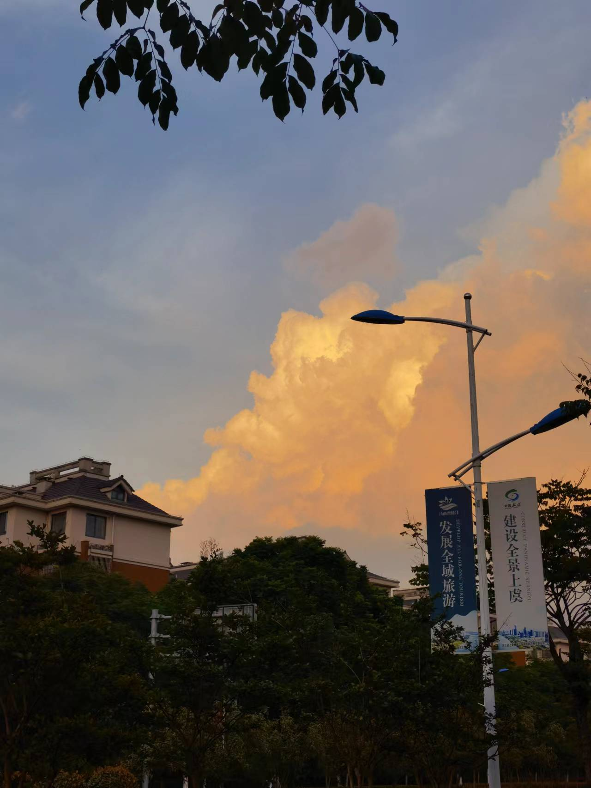
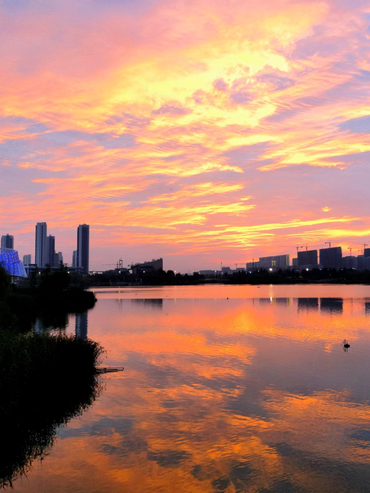
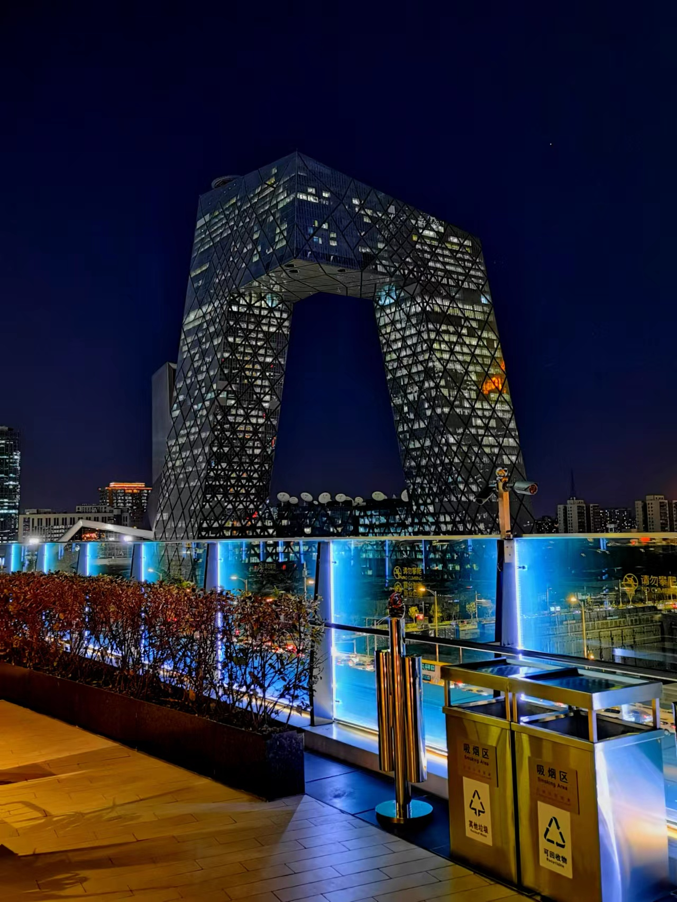

现就读于中国传媒大学公共关系学系，爱好就是热爱一切值得热爱的。喜欢文学、大海和相逢，但没有胜过自己。 梦想是看完中国沿海海岸线，到贡嘎玩上一圈。 喜欢自由，但却需要规矩。 追求效率，痛恨内卷。 最爱的人是妈妈~ 最喜欢的一句话是 “相逢的人会再相逢”

在浙江生活十四余年，在宁波长大，现居绍兴，见过没有沙滩的大海，坐过行驶在汹涌海浪上的轮渡，感受着当地的风土人情，但很可惜，没学会吴语，没爱上霉菜。

回乡求学六年，体验过陌生城市里只认识妈妈一个人的感觉，钦佩过曾经能为学习付出那么多的自己，认识了几个能讲一辈子话的好友。

待得最短，体验最多。不想留在北京，但想让北京留住我，有最开心的日子，也有最伤心的日子。是交织，是缠绕，是坚持。